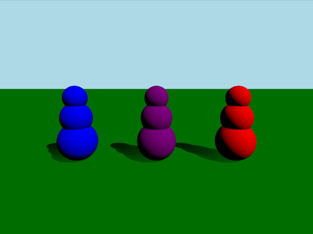

Qt Quick 3D Physics - Mass Example
Demonstrates different ways of setting mass and inertia of a body.

This example demonstrates three different ways of setting up the mass and inertia of a body. The scene consists of three bodies that consist of three spheres stacked vertically. These bodies all have the same mass but differing centers of mass and inertia tensors giving them different behavior when colliding.
Setup
We first add our PhysicsWorld:
PhysicsWorld { running: true gravity: Qt.vector3d(0, -9.81, 0) typicalLength: 1 typicalSpeed: 10 scene: viewport.scene }
We do the usual setup where we have an environment, camera and lights:
environment: SceneEnvironment { clearColor: "lightblue" backgroundMode: SceneEnvironment.Color } PerspectiveCamera { id: camera position: Qt.vector3d(0, 2, 5) eulerRotation: Qt.vector3d(-10, 0, 0) clipFar: 100 clipNear: 0.01 } DirectionalLight { eulerRotation.x: -45 eulerRotation.y: 45 castsShadow: true brightness: 1 shadowFactor: 100 }
Physical objects
We have our regular static plane:
StaticRigidBody { position: Qt.vector3d(0, 0, 0) eulerRotation: Qt.vector3d(-90, 0, 0) collisionShapes: PlaneShape {} Model { source: "#Rectangle" materials: DefaultMaterial { diffuseColor: "green" } castsShadows: false receivesShadows: true } }
We define a custom QML class for our body which we call RolyPoly since they behave like so called roly-poly toys. The RolyPoly is a DynamicRigidBody with three spherical collision shapes:
DynamicRigidBody { property string color: "blue" collisionShapes: [ SphereShape { id: sphere0 diameter: 1 }, SphereShape { id: sphere1 diameter: 0.8 position: Qt.vector3d(0, 0.6, 0) }, SphereShape { id: sphere2 diameter: 0.6 position: Qt.vector3d(0, 1.1, 0) } ] Model { source: "#Sphere" position: sphere0.position scale: Qt.vector3d(1,1,1).times(sphere0.diameter*0.01) materials: PrincipledMaterial { baseColor: color } } Model { source: "#Sphere" position: sphere1.position scale: Qt.vector3d(1,1,1).times(sphere1.diameter*0.01) materials: PrincipledMaterial { baseColor: color } } Model { source: "#Sphere" position: sphere2.position scale: Qt.vector3d(1,1,1).times(sphere2.diameter*0.01) materials: PrincipledMaterial { baseColor: color } } }
We then add three roly-polys to our scene:
RolyPoly { position: Qt.vector3d(-2, 0.5, 0) color: "blue" mass: 0.9 centerOfMassPosition: Qt.vector3d(0, -0.5, 0) inertiaTensor: Qt.vector3d(0.217011, 0.0735887, 0.217011) massMode: DynamicRigidBody.MassAndInertiaTensor } RolyPoly { position: Qt.vector3d(0, 0.5, 0) color: "purple" mass: 0.9 centerOfMassPosition: Qt.vector3d(0, -0.5, 0) inertiaTensor: Qt.vector3d(0.05, 100, 100) massMode: DynamicRigidBody.MassAndInertiaTensor } RolyPoly { position: Qt.vector3d(2, 0.5, 0) color: "red" mass: 0.9 massMode: DynamicRigidBody.Mass }
The purple and blue roly-poly has a custom center of mass and inertia tensor. Since bodies use uniform density by default and will calculate mass and inertia automatically we set massMode to DynamicRigidBody.MassAndInertiaTensor in our purple and blue bodies to use our provided mass and inertia tensors instead. The lower center of mass will make it so the bodies will always stand up after being pushed over. The inertia tensor of the purple body makes it so it will wobble easily in one direction but hardly in the other. The red body has an automatically calculated center of mass and will therefore keep lying down after being knocked over.
Shooting balls
To test out the behavior of the different bodies we add a Node for shooting balls:
Node { id: shapeSpawner property var spheres: [] property var sphereComponent: Qt.createComponent("Sphere.qml") function createBall(position, forward) { let diameter = 0.2 let speed = 20 let sphere = sphereComponent.createObject(shapeSpawner, { "position": position, "sphereDiameter": diameter }) sphere.setLinearVelocity(forward.times(speed)) var pair = { "sphere": sphere, "date": Date.now() } spheres.push(pair) if (sphere === null) { console.log("Error creating object") } } function clean() { spheres = spheres.filter(sphere => { let diff = Date.now() - sphere['date']; if (diff > 5000) { sphere['sphere'].destroy(); return false; } return true; }); } Timer { interval: 200 running: true repeat: true onTriggered: shapeSpawner.clean() } }
We then add a WasdController to be able to move the camera and aim and shoot balls at the bodies:
WasdController { speed: 0.01 controlledObject: camera Keys.onPressed: (event) => { handleKeyPress(event); if (event.key === Qt.Key_Space) { shapeSpawner.createBall(camera.position, camera.forward); } } Keys.onReleased: (event) => { handleKeyRelease(event) } }
Files: